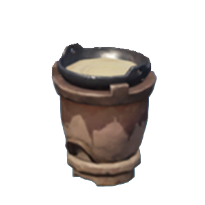

Cooking
烹饪操作能够将多个食材处理成菜肴,但也可能将菜肴烤糊变成黑暗料理.
The cooking operation can process multiple ingredients into cusines, but it may also burn cusines into bad cusines.
Cooking Machine
以下两种机器能够对食材实施烹饪操作. 对机器的详细介绍, 请参考wiki的Machine部分.
The following two types of machines can perform cooking operations on food ingredients. Refer to the Machine section of the wiki for a detailed description of the machine.

Cooking in Recipe
在配方介绍图中,红色大箭头代表烹饪操作. 例如以下配方代表肉片和甜甜花可以烹饪成甜甜花酿鸡.
In the recipe illustration,large red arrows represent cooking operations. For example, the following recipe represents meat slices and sweet flowers can be cooked into sweet flowers stuffed chicken.